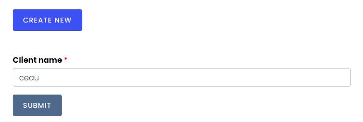
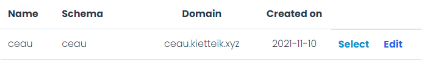

<div class="wrap-content">
  <div class="container">
    <div class="create-client">
      <h3>Create a client</h3>
      <p>
        When you signed up to Ceau, you need a Client, all application will
        connect to a specify Client.
      </p>
      <p>You need to provide <span class="bold">Client name</span></p>
      
      <p>Select a client to use</p>
      
      <p>Client infomation will be display in top left of nav bar</p>
      
    </div>
  </div>
</div>
